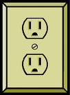
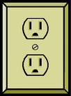
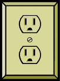

**Internationalization** concerns supporting users who speak different languages and have different cultural conventions. We'll talk about some of the reasons why internationalization can be hard, and discuss some of the support that exists in GUI toolkits for making it easier.
A good source of information about this problem is *Java Internationalization*, by Andy Deitsch and David Czarnecki (O'Reilly, 2001). There's also [a trail in the Java Tutorial](http://java.sun.com/docs/books/tutorial/i18n/index.html) about Java's internationalization features.
 
Icons must also be carefully chosen, or replaced when the interface is localized. Metaphorical icons that refer to everyday objects like mailboxes and stop signs aren't necessarily recognizable, because the objects may look different in different countries. Hand gestures pictured as icons may actually be offensive in some countries. And visual puns are always a bad idea - an English-speaking designer might think it's cute to use a picture of a table (the furniture) to represent table (the 2D grid), because the words are the same in English. But the words in German are tisch (furniture) and tabelle (grid), so a German may find the joke incomprehensible.

Icons must also be carefully chosen, or replaced when the interface is localized. Metaphorical icons that refer to everyday objects like mailboxes and stop signs aren't necessarily recognizable, because the objects may look different in different countries. Hand gestures pictured as icons may actually be offensive in some countries. And visual puns are always a bad idea - an English-speaking designer might think it's cute to use a picture of a table (the furniture) to represent table (the 2D grid), because the words are the same in English. But the words in German are tisch (furniture) and tabelle (grid), so a German may find the joke incomprehensible.
Internationalization
Interfaces with international user populations - such as Microsoft Word, shown here - have to be carefully designed to make them easy to adapt to other languages and cultures. The process of making a user interface *ready* for translation is called **internationalization** (often called **i18n** for short - "18" because it replaces 18 characters in the middle of "internationalization"). Essentially, internationalization separates the language-specific parts of the interface from the rest of the code, so that those parts can be easily replaced. The translation is usually done by nonprogrammers, so their job is easier if the textual messages are separate from the code. Actually doing this translation for a particular language and culture is called **localization**. One way to understand the difference between these two technical terms is by analogy to portability across operating system platforms. If you write your program carefully so that it doesn't depend on specific features of an operating system or processor, you've made it portable. Making a program portable is analogous to internationalizing it. Actually *porting* it to another particular platform, e.g., by recompiling it, is analogous to localizing it. Unfortunately localization is much harder than merely knowing what words to substitute (and online translators like Babelfish and Google Translate can only barely do that, so don't rely on them!) You can't necessarily rely on bilingual members of your design team, either. They may be reasonably fluent in the other language, but not sufficiently immersed in the **culture** or **national standards** to notice all the places where the application needs to change. The "**you are not the user**" statement is especially true in internationalization.Design Challenges
Here are some of the reasons why internationalization is hard. First, every piece of text that might be shown to the user is a potential candidate for translation. That means not just properties of components (like menu items and button labels), but also text drawn with stroke drawing calls, and text embedded in pixel images (like this one taken from the KAIST web page). Translation can easily change the size or aspect ratio of the text; German labels tend to be much longer than English ones, for example. It's quite apparent that pixel-based objects will be most difficult to internationalize, with excessive manual effort and per-language image files required. Error messages also need to be translated, of course - which is another reason not to expose internal system names in error messages. An English-reading user might be able to figure out what `FileNotFoundException` means, but it won't internationalize well. Here's a sign from Wales, where official signs are required to be bilingual (English and Welsh). The English is clear enough to English-speaking lorry drivers - but the Welsh actually reads "I am not in the office at the moment. Send any work to be translated." The translation was outsourced by email, you see... There's a larger lesson here that translation without sufficient context can lead to errors. The BBC article cited just above has some amusing examples of other English/Welsh signs that are mistranslated ("staff" → "wooden stick") because the translator wasn't fully aware of the context. Different languages obviously use scripts other than the Latin alphabet. Here are some of the scripts that Windows, Mac, and web browsers all support. It's important to distinguish between **script** (or alphabet) and **language**. Western languages like English, French, German, and Italian are different languages that all use the Latin alphabet (basically). Russian, Ukrainian, and Bulgarian (among others) use the Cyrillic alphabet. Many scripts are not even written left-to-right; Arabic and Hebrew are the most common languages with scripts written right-to-left. CJK (Chinese, Japanese, Korean) characters are usually written left-to-right, but can also appear vertically (top-to-bottom) and occasionally even right-to-left. Reversing the direction of reading requires reversing the entire layout of your screen, since the user is now accustomed to starting from the right edge when they scan. It might even affect the "natural" direction of arrow icons. The picture above shows the Hebrew version of Firefox. Notice that the menu bar is reversed (it starts from the right, and the rightmost menu is the File menu), the toolbar is reversed, and the Back button (which is now the rightmost button) is now pointing to the right! The URL box isn't reversed, however, because it uses the Latin alphabet, not Hebrew. This is another common wrinkle in right-to-left languages: when they embed foreign words, or Arabic numbers, the embedded words go in left-to-right order. So the text might be constantly switching direction. Number formats and date formats also vary - not just by language, but by country. In the U.S., commas are used for millions and thousands, and a period for the decimal point, as in "72,350.55". But the convention in Germany is precisely the opposite: "72.350,55". Even countries that share the same language may differ on conventional formats. Koreans tend to write dates as YY/MM/DD, Americans write MM/DD/YY, and British write DD/MM/YY. The target for localization therefore needs to be specified by a language/country pair, also called a **locale**, such as US English, UK English, or Canadian French.Icons
- Familiar icons in one culture aren't in others

Implementation Techniques
Now that we've surveyed the challenges, let's talk about some solutions. Modern UI toolkits provide support that makes it easier to implement internationalized interfaces. The most basic feature for internationalization is supporting translation into different languages. UI toolkits that support this allow textual messages to be stored separately from the code, as dynamically loadable, structured text files, so that an application can be localized simply by replacing those text messages. The messages are referred to by names, such as "file-menu-label". This is an example of the general strategy for internationalization. First, use abstraction to isolate the parts of your system that need to change from one locale to another, separating it from the rest of your program. (This is an application of a familiar software engineering rule - if you know something will change, isolate it.) Second, as much as possible, design these locale-specific parts so that they don't require reading source code or recompiling the program, so that localization can be done by nonprogrammers. Internationalization gets a little tricky when a message has dynamic parts, like "25 users have visited since January 1". In an uninternationalized program, you might simply concatenate in your source code: `num + " users have visited since " + date`. For internationalization, you need to give the translator flexibility to put the dynamic parts anywhere, using a format like "%1 users have visited since %2", so that it could be rewritten as "Since %2, %1 users have visited" if the language demands it. And you also need to think about plurals, usually by having different versions of the entire message that depend on the value of num: 1 **user** vs 2 **users**. Format.js supports [pluralization rules](https://formatjs.io/guides/message-syntax/#plural-format) that make this task somewhat easier. But be careful - Arabic [has a different plural form](http://en.wikipedia.org/wiki/Grammatical_number) when `num == 2` than when `num > 2`. To handle languages that read right-to-left, UI toolkits like HTML/CSS provide support for bidirectional text (sometimes called “BiDi” or BIDI for short). The trickiest part here is that Unicode strings may (and often do!) mix characters from multiple scripts: Arabic and English, for example. A good UI toolkit will ensure that when you draw such a string to the screen, it draws the appropriate characters in the appropriate order. There must be a base direction that determines whether the whole string starts at the left or the right; if the interface is primarily English, for example, then the base direction should be left to right, but if it’s primarily Arabic, the base direction should be right to left. To avoid messing up bidirectionality, don’t try to draw a sentence in little pieces; instead, put together a string first, and draw it all at once, letting the toolkit figure it out. (If you’re using message files properly, of course, this will happen anyway.) International toolkits must also support bidirectional text editing, making (for example) arrow keys and selection work in the correct direction for the script. Automatic layout managers can also support bidirectionality. In CSS, for example, table cells are laid out either left-to-right or right-to-left, depending on the HTML `dir` attribute or CSS `direction` property of the parent. Finally, to handle other changes that localization might impose, it helps to isolate details of the presentation. Images and icons might need language translation (if they contain text) or cultural translation (if they use unfamiliar symbols). Fonts might need to change to handle different scripts, since fonts rarely have glyphs for every script in Unicode. And colors might need to change if they have cultural problems. For web programming, CSS makes this kind of separation easier.Answer this question: [Internationalization](https://docs.google.com/forms/d/e/1FAIpQLSdU83us9sZhgEctZEtk3HIGLvAuw53dd_7BOLYwYk43dllHuA/viewform?usp=sf_link)